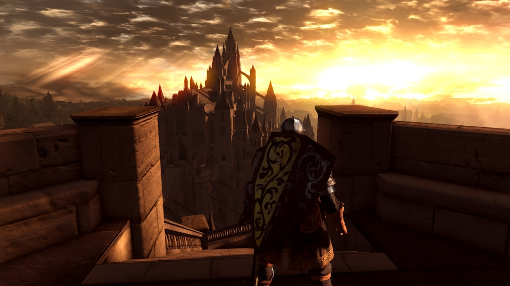

| Sergi García Tocados: |
| Responsable de explorar el mundo de Dark Souls para desarrollar la guia lo más completa posible y desarrollo de la página web. |
 |
| Rubén García Tocados: |
| Colaborador de la guia de Dark Souls y responsable de marketing. |
|  |
Quien somos?